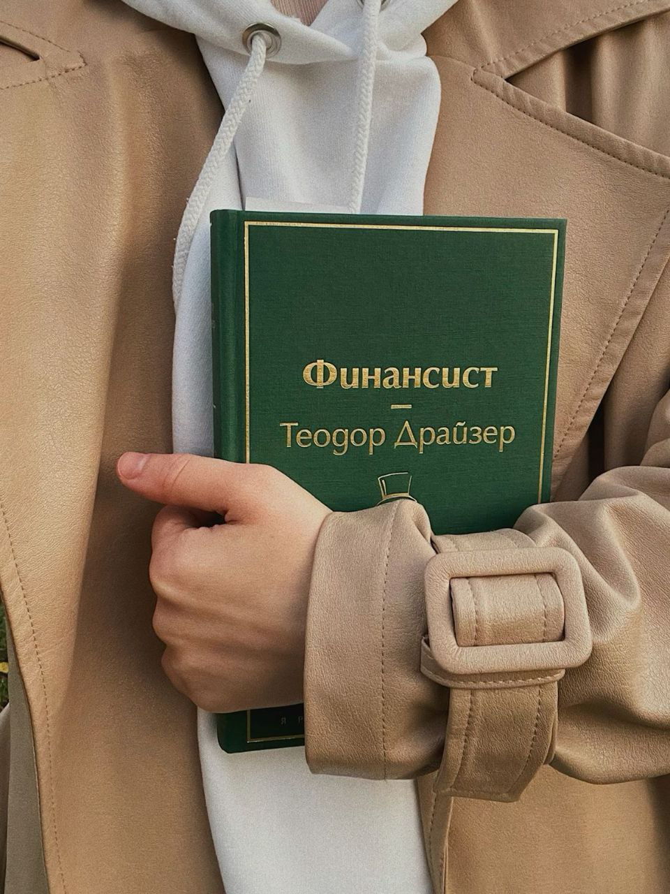
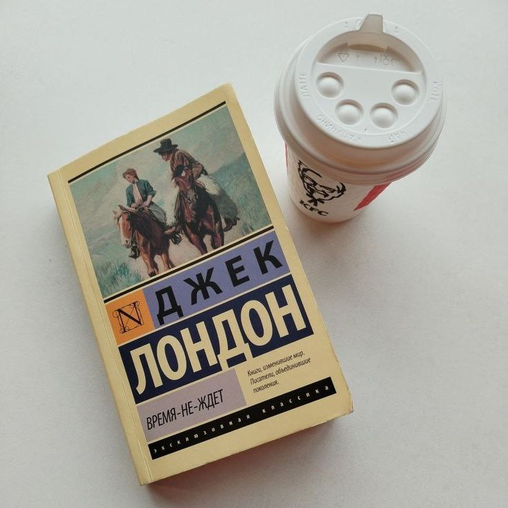
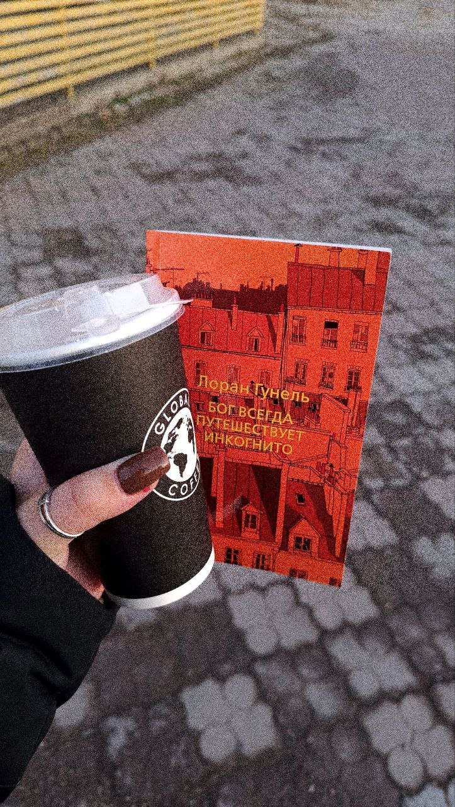

ТОП 3 КНИГИ О ТРУДНОСТЯХ, ФИНАНСАХ И ЖИЗНИ
Этим летом я прочитала три невероятные книги, в каждой из которых своя история и свои герои. Однако, все они чем-то похожи: герои движутся на пути к своей цели сквозь трудности и неудачи, встречая заветную любовь и жизненные уроки, которые меняют их мировоззрение. В каждой книге затронута тема финансов, денег, благополучия. Герои так или иначе становятся либо крупными игроками на рынке, либо соприкасаются с темой финансов.
Если вы устали от шаблонных психологических мотивационных книг, и хотите простых историй, которые действительно впечатляют и затрагивают тему денег, то листайте страницу ниже. Возможно, что именно эти книги станут вашим новым взглядом на жизнь или навсегда останутся в вашем сердце после прочтения.
1. «Финансист» Теодор Драйзер
Книга Теодора Драйзера даст вам общее и новое представление о финансовых сделках, брокерских счетах и всевозможных денежных махинациях. Даже если вы не так глубоки в этой теме, книга будет вам понятна. Однако рекомендую выписывать и изучать то, что вас заинтересовало. Не зря же вы решили читать книгу с таким названием.
Основной сюжет романа «Финансист» (да-да это роман!) разворачивается в Америке второй половины XIX века. События происходят преимущественно в Филадельфии и охватывают период Гражданской войны, показывая становление главного героя, Фрэнка Каупервуда, на фоне бурного развития экономики того времени.
Чем же меня привлекла эта книга? Главное, чему научил меня герой произведения Каупервуд — это способности позитивно мыслить и уверенно держаться при любых обстоятельствах. "Нет смысла плакать над пролитым молоком" - как-то сказал он. Герой движим собственной силой. Несмотря на то, что его отец был банкиром, он буквально с нуля построил свой бизнес. Сначала работал на кого-то, а потом стал самостоятелен. И это все не без личных способностей, которые он круто развивал.
Нужно сказать, что в книге открыто говорится о мощи связей, в данном случае политических. Если ты насолил важной шишке, то пощады от них не жди. Однако Каупервуд не боится никого и ничего. Он решительно действует так, как считает правильным. И да, герой действительно умён и привлекателен.
Нужно добавить, что «Финансист» входит в «Трилогию Желаний» Теодора Драйзера, которая также включает ещё два произведения: «Титан» и «Стоик». Поэтому если вы дочитаете «Финансиста» вас ждет продолжение о жизни Каупервуда в других произведениях писателя.
2. «Время-не-ждет» Джек Лондон
Года два назад я прочитала замечательную историю о Мартине Идене, запавшей мне в душу. Встретив знакомого писателя в домашней библиотеке дедушки, я начала читать новую книгу не раздумывая. Особенно меня привлекло название: «Время-не-ждет». Мне как раз нужна была мотивация: «либо сейчас, либо никогда».
Время-не-ждет – так прозвали главного героя Элама Харниша. Сюжет романа (да, это опять роман) происходит на Аляске в конце XIX века, а затем переносится в Сан-Франциско, где главный герой, золотоискатель Элам Харниш, становится успешным предпринимателем, пока не возвращается на Аляску. Это время золотой лихорадки.
Остальные подробности сюжета я отпущу. Скажу только одно, что на протяжении середины романа мне было грустно наблюдать как главный герой трансформировался.
3. «Бог всегда путешествует инкогнито» Лоран Гунель
Я думаю, это нашумевшая книга и где-то она точно попадалась вам на глаза. Мне она несколько раз попалась в Пинтересте (не буду скрывать), и я решила, что это знак.
Тема религии и Бога – это всегда будоражащие темы для меня. Я не настолько погружена в это, но отношусь серьёзно. (Примечание: не хочу затронуть или оскорбить кого-то на данную тему) Книга с таким названием рисовала мне сюжет помощи главному герою через других людей, которых посылают нам в помощь, иии….я бесстрашно решилась взяться за её прочтение.
Все оказалось немного по-другому насколько я думала. Однако сюжет вас впечатлит: книга «Бог всегда путешествует инкогнито» рассказывает о молодом человеке, который находится на грани отчаяния и спасается от самоубийства таинственным незнакомцем. В обмен на спасение он вынужден выполнять все его поручения, которые направлены на то, чтобы изменить его жизнь и помочь найти счастье. По сути, книга является философско-психологическим романом о том, как принять свою судьбу, преодолеть страхи, научиться видеть возможности в случайных событиях и взять жизнь в свои руки. Здесь же вы найдете детективные элементы: герой пытаете разгадать кто этот незнакомец и зачем он помогает совершенствовать жизнь главного героя?
Где же здесь деньги? Дело в том, что главный герой работает в компании, которая является акционерным обществом. Поэтому на пути прочтения вы встретите небольшие подробности о том, как строится цена акций и как работают такие компании. Но самое интересное ждет вас в конце, когда вы узнаете, как герой справился с черной полосой в его жизни.
Итого: трудности, любовь, успех, слава и деньги. А нужны ли деньги героям в конце концов? Переходите по ссылке ниже и читайте еще больше полезного материала в моем блоге